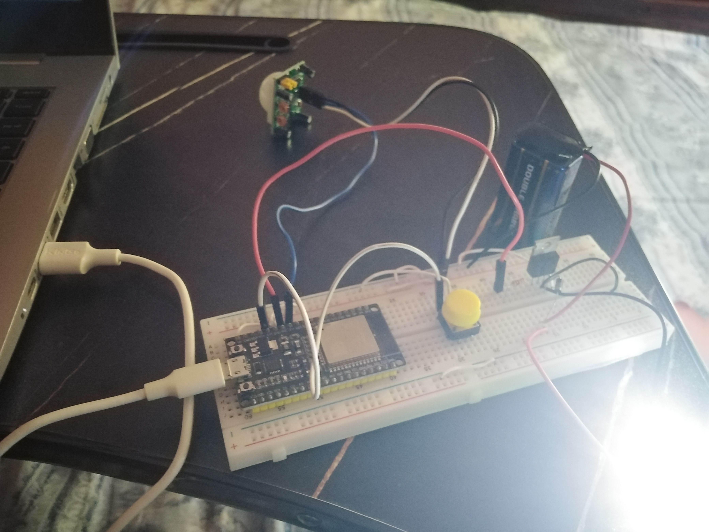

A motion-activated ESP32 lighting system using a PIR sensor to drive an LED array and relay load, with a manual off override.

This project implements an ESP32-based motion-activated lighting system using a PIR sensor, LED array, and relay control. When motion is detected, LEDs are turned on, and an external relay can be triggered to power a higher load. A manual off button is included to override the system for energy savings.
The PIR sensor outputs a HIGH signal when motion is detected. The ESP32 reads this signal and switches on the LED array and relay. If the manual off button is pressed, the system disables outputs regardless of PIR state until reset.
Motion-triggered output with manual override:
if (digitalRead(PIR_PIN) == HIGH && !manualOff) {
digitalWrite(LED_PIN, HIGH);
digitalWrite(RELAY_PIN, HIGH);
} else {
digitalWrite(LED_PIN, LOW);
digitalWrite(RELAY_PIN, LOW);
}
if (digitalRead(BUTTON_PIN) == LOW) {
manualOff = true;
}
The system responded within 0.2 seconds to motion, activating LEDs and the relay. The manual off button worked instantly, preventing any accidental reactivation until system restart.
This ESP32 PIR lighting system is ideal for energy-efficient lighting control. The addition of a manual override increases user control and flexibility, making it suitable for home automation and security lighting.